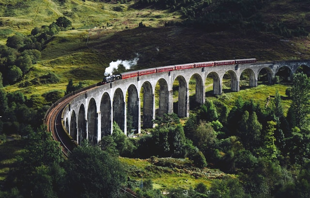
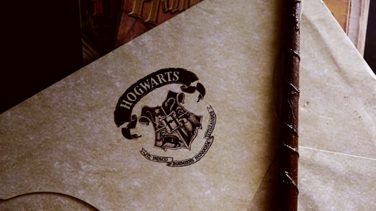

Trem para Hogwarts - Hogwarts Express

É o trem que sai da plataforma 9¾ da estação King's Cross em Londres.
Carta de Hogwarts

Carta para os novos alunos.
| Personagem | Tempo de Tela |
|---|---|
| Harry Potter | 539 minutos e 15 segundos |
| Ron Weasley | 211 minutos e 45 segundos |
| Hermione Granger | 205 minutos |
| Albus Dumbledore | 77 minutos e 15 segundos |
| Rubeus Hagrid | 45 minutos e 45 segundos |
| Severus Snape | 43 minutos e 15 segundos |
| Voldemort | 37 minutos e 15 segundos |
| Draco Malfoy | 31 minutos e 45 segundos |
| Gina Weasley | 30 minutos e 15 segundos |
| Professor McGonagall | 28 minutos e 45 segundos |